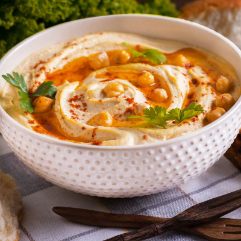

🌱 Hummus de garbanzos

Ingredientes:
- 400 g de garbanzos cocidos
- 2 cucharadas de tahini (pasta de sésamo)
- 1 diente de ajo
- Jugo de 1 limón
- 2 cucharadas de aceite de oliva
- Sal al gusto
- 1/2 cucharadita de comino
Instrucciones:
- Enjuaga los garbanzos y colócalos en una batidora.
- Añade tahini, ajo, jugo de limón, aceite, sal y comino.
- Procesa hasta obtener una crema suave. Agrega agua si deseas una textura más ligera.
- Sirve con pan de pita o crudités.